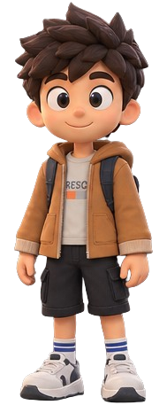

Salvo automaticamente no navegador · v0.1

Você é Arthur, sozinho num Aimorés tomado pelos mortos. Colete, fabrique, construa e descubra o que aconteceu.
| Ação | Teclado e mouse | Celular |
|---|---|---|
| Andar / correr | WASD ou setas / Shift | Joystick / 🏃 |
| Atacar | Espaço ou clique | ⚔️ |
| Coletar, abrir, conversar | E | ✋ |
| Curar / recarregar | Q / R | 🩹 / 🔄 |
| Inventário · Crafting · Construção | I · C · B | 🎒 🔨 🧱 |
| Mapa · Missões · Habilidades · Sobreviventes | M · J · K · P | 🗺️ 📜 ⭐ 👥 |
| Pausa / sair do menu | Esc | ⚙️ / ✕ |